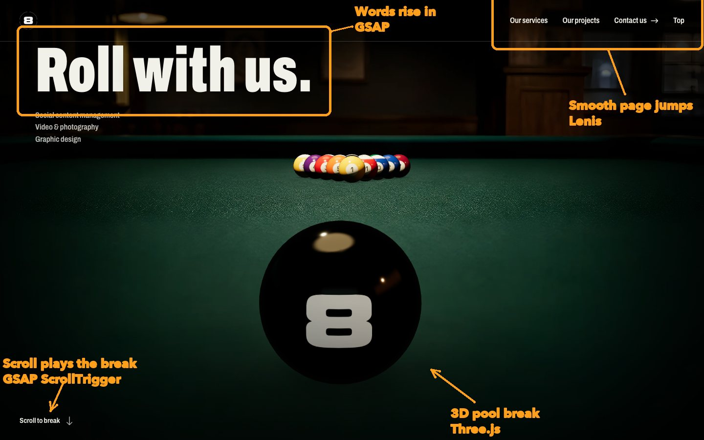
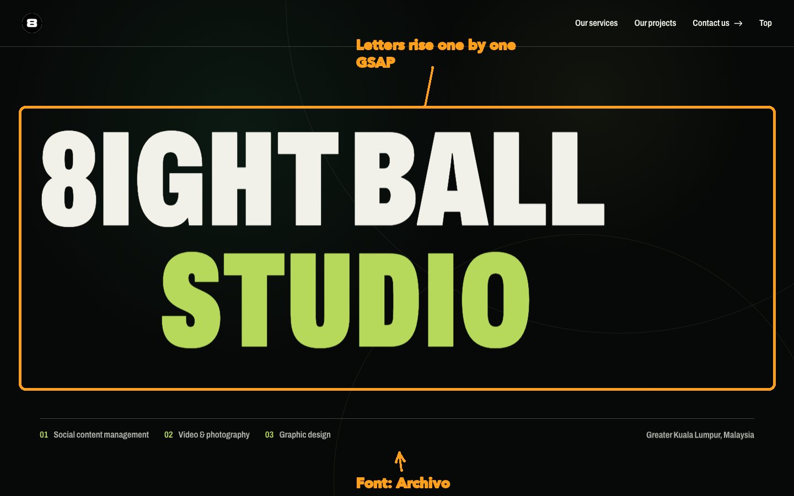
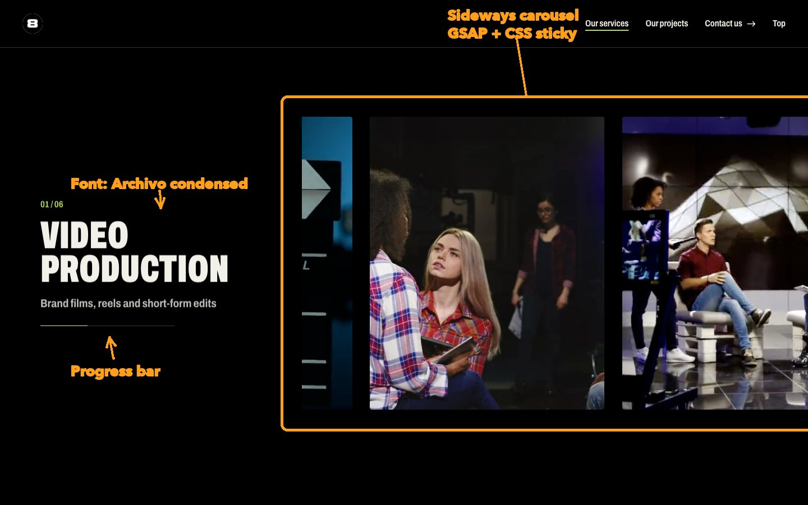
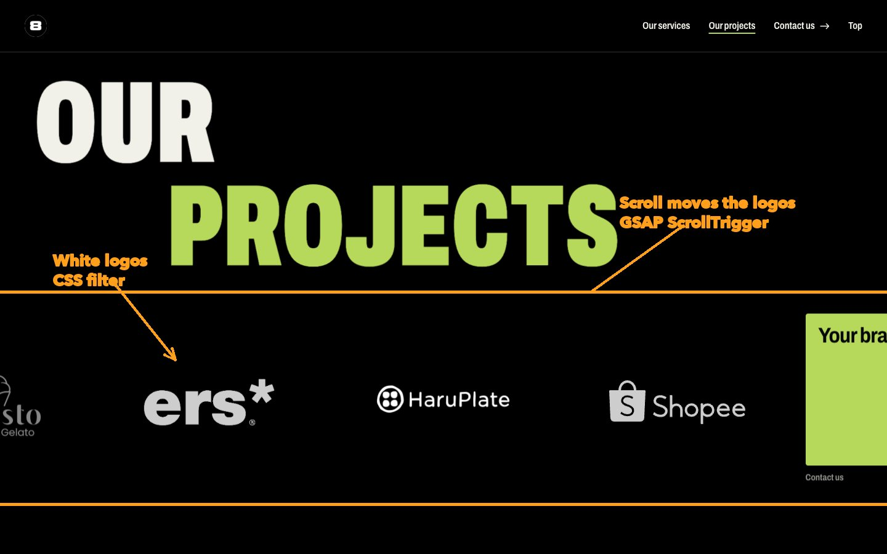
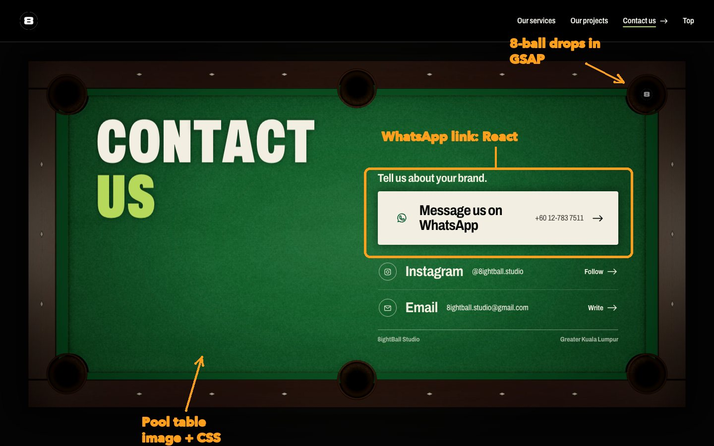

A walk down the live site, page by page. The orange arrows on each screenshot point at a part of the page and name the tool that makes it work. No code knowledge needed.
How the site gets from the code to a visitor's screen, and the main tools running inside the browser once it arrives.
The first screen. Scrolling plays a pool break: the 8-ball rolls into the rack and drops into a pocket.

Draws the balls in real 3D on top of a photo of a table. Needs WebGL; very old devices get a simpler version.
"Roll with us." slides up word by word when the page finishes loading.
Menu links glide to their section instead of jumping. Mouse-wheel scrolling is smoothed too.
The animation is tied to the scrollbar: scroll down to play it, up to rewind.
The studio's name appears as the break ends. The screen holds still here for a moment.

Each letter is its own piece, so they can come up in order, left to right.
One font family for the whole site: narrow and heavy for titles, normal for small text.
Six services, one at a time. Each one stays on screen while its row of videos and photos slides sideways to the end, then the next service scrolls up.

"Sticky" holds the section in place; GSAP slides the row as you scroll down.
The phone's browser moves the row itself, so it keeps up with the finger without stutter.
Fills as the row slides, so you can tell how much is left.
Free sample clips from Mixkit for now. They play muted, only while that service is on screen.
Client logos slide past in white on black, then two cards: one opens Contact, one opens Instagram.

The original colour logos are turned pure white by the browser, so no extra image files are needed.
Scrolling down slides the row sideways. On a computer the row also tilts slightly when you scroll fast.
The last page sits on a pool table under a lamp. The 8-ball rolls in and drops into a pocket to end the story.

A rendered photo of the table, with grain and lamp light added in code. On phones you see a close-up of the middle.
The main way to get in touch. Opens a WhatsApp chat with +60 12-783 7511.
Rolls in from the left as you reach the page and sinks into the top pocket.